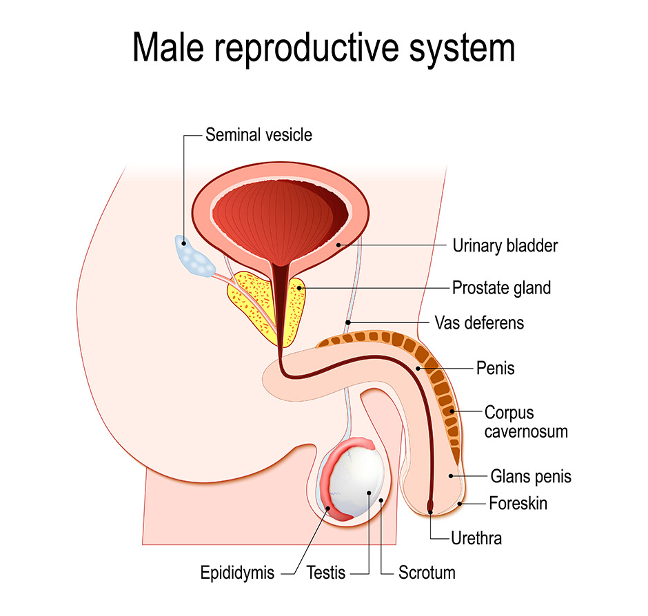

The prostate is a male sex gland located just below the bladder and in front of the rectum. Along with the testicles and seminal vesicles, are part of the male reproductive system as shown in the diagram below. It surrounds the urethra, the tube that carries urine and semen out of the body through the penis.
The prostate produces some of the fluid that makes up semen, which enriches and protects sperm when men ejaculate. The male hormone testosterone, which is made by the testicles, enables the prostate gland to grow and develop during puberty. In an adult, the prostate gland is usually about the size of a walnut and it is normal for it to grow larger as men age. Sometimes this can cause problems, such as difficulty with passing urine, and may develop into a benign condition called Benign Prostatic Hyperplasia (BPH). Tumours can also develop in the prostate, these are known as prostate cancer.
